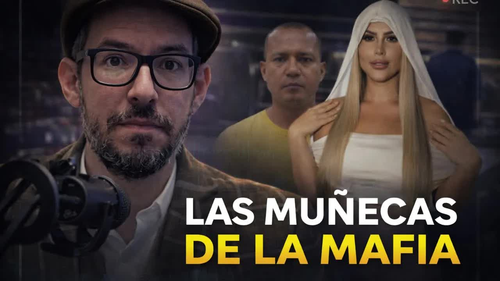
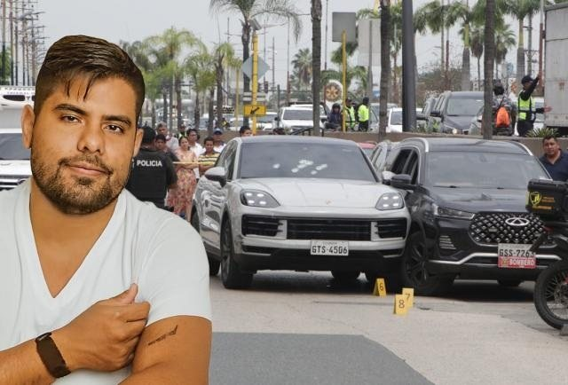
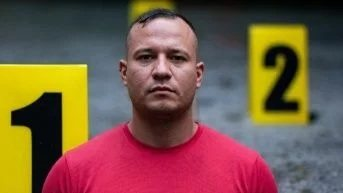
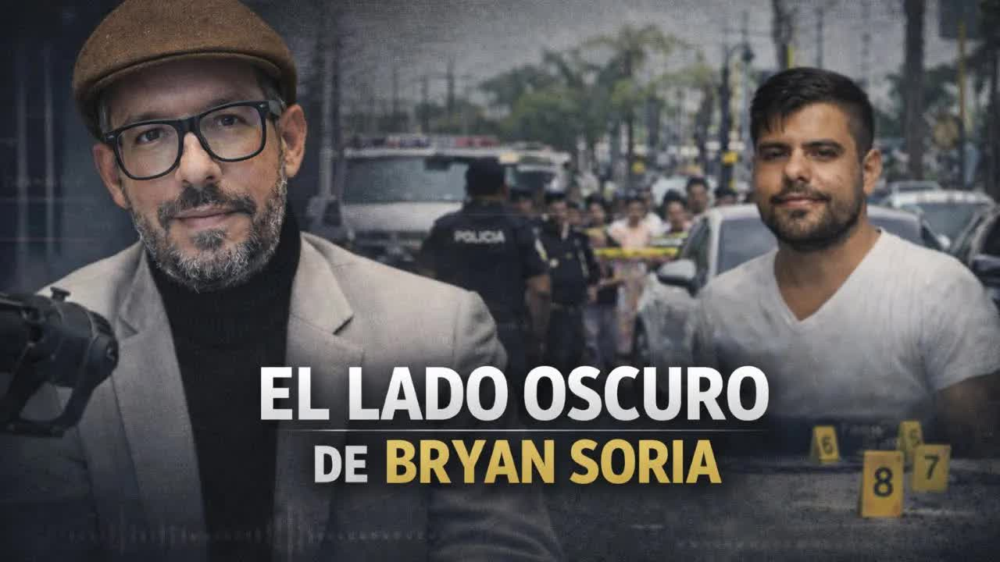
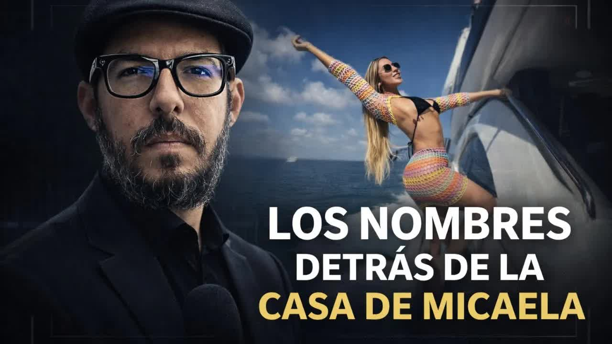
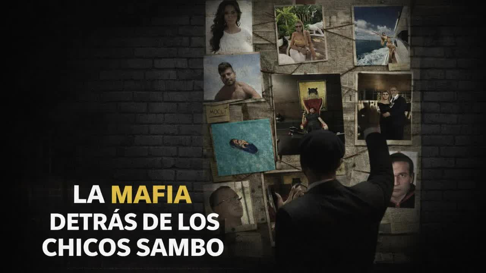
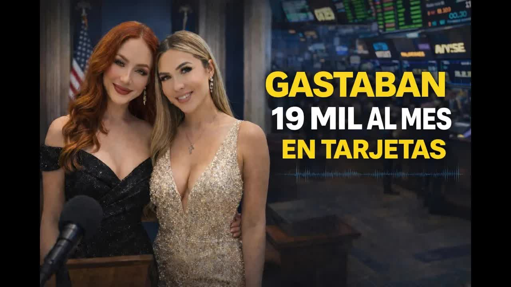

Informe 1 · El caso Mocolí levanta el velo
Los movimientos financieros de las jóvenes vinculadas al entorno de alias Marino, el líder de Los Lagartos asesinado en Mocolí: Micaela Morales, Wendy Landa, Bryan Soria y Andrés Vélez. Tarjetas, viajes, carteras y departamentos que no cuadran con ningún ingreso declarado, según los datos de la UAFE, el SRI y la banca.
Isla Mocolí es un conjunto de urbanizaciones cerradas en Samborondón, donde vive parte de la gente más rica de Guayaquil. La noche del 7 de enero de 2026 más de diez hombres armados, vestidos como policías, entraron a Mocolí Golf Club y mataron a tres hombres en una cancha de fútbol. Uno era Stalin Rolando Olivero Vargas, 40 años, a quien la Policía identificaba como cabecilla de Los Lagartos y objetivo de alto valor del Estado desde hacía casi dos años. Lo llamaban Marino porque había sido oficial de la Armada: lo expulsó en 2011 por el robo de armamento en un destacamento naval; según sus compañeros era paquetero, contaminaba contenedores. Pasó a Los Cubanos, la banda rival de Los Choneros, y cuando mataron a William Poveda, alias Cubano, en la cárcel Regional en 2019, la estructura mutó en Los Lagartos, hoy Mafia 18, bajo alias Choclo, con base en el sur de Guayaquil. Entraba y salía del país con su nombre y otro apellido, viajaba a Dubái como quien va a la playa. Según las fuentes de Boscán vivía allá y volvió por amor. El ministro del Interior, John Reimberg, sostuvo que lo mataron por intentar pasarse de Los Lagartos a Los Lobos.
La cancha la había reservado Andrés Vélez, hijastro del exprefecto del Guayas Carlos Luis Morales, que no fue por una lesión aunque su hijo estaba ahí. Vélez era el proveedor de los códigos QR con los que entró el grupo de Marino, tenía un arma con permiso, fue investigado por lavado en 2020 y declarado inocente, y reconoció haberle prestado dinero a Bryan Soria; al día siguiente atentaron contra una empresa de su esposa en la Garzota. Marino era el prometido de su hermanastra, Micaela Morales Arcos, hija del exprefecto, y se había presentado a la familia con otro nombre. Micaela estaba en la cancha: son sus gritos, Marino no, los que se oyen en el video. Salió del país el 8 de enero. Vélez intentó salir por Panamá y fue devuelto. Una de las hipótesis es que él era el objetivo; otra, que Eduardo Freire, novio de Wendy Landa, se salvó por cambiar de vehículo. Cuando se supo quién era la pareja, las redes se llenaron de fotos y videos de Micaela y de su círculo, entre ellas la influencer Wendy Landa. Las bautizaron las muñecas de la mafia.

El 12 de enero Boscán publicó el primer informe, setenta y cinco minutos, y lo abrió con una historia propia: la foto que se tomó sin saberlo con Landy Párraga, la novia de Leandro Norero, en una conferencia en Cancún, y cómo una fuente convenció a Párraga de no mandar a matar a Luis Eduardo Vivanco. Párraga fue asesinada el 28 de abril de 2024 en una cevichería de Quevedo después de subir una historia a Instagram. Una muñeca de la mafia, escribió Boscán, es una mujer a la que el dinero le compró un cuerpo y la violencia le va a cobrar el alma. La casa de Mocolí fue allanada esa misma tarde, junto a otras dos propiedades; los policías sabían que llegaban una semana tarde. El 14 de enero una testigo protegida que trabajó en esa casa habló de Bryan Soria, asesinado en noviembre de 2025, y de Evelyn Rizo, la mujer con la que convivió, expareja de Dritan Rexhepi, el jefe de la mafia albanesa preso en Albania; aportó audios en los que Soria la amenaza de muerte. El 15 de enero, los papeles de la casa: la carta de la urbanización con la historia del lote, los cinco cheques con los que Soria la reservó, la hipoteca del Banco Pichincha, la mudanza del 26 de noviembre y la llegada de Micaela el 13 de diciembre; nadie pidió un documento. El 16, con Mónica Velásquez, la mafia detrás de los chicos de Sambo: la red de empresas y prestanombres, Alexandra Burgos, la pareja formal de Marino, con un bazar que facturó 2,3 millones en su primer año y un Maserati; Cristian del Salto, el amigo de viajes de Soria que consiguió la casa sin dejar rastro en la historia de dominio; y el padre de Soria, militar retirado y jefe de seguridad de Dole, la exportadora.
No soy prepago, no soy una narcobaby, nunca he vendido mi cuerpo y nunca he estado con un narcotraficante.
Wendy Landa, TikTok, 14 de enero de 2026, según recogió Vistazo
El 2 de febrero salió el segundo informe, con Mónica Velásquez. Hoy no vamos a hablar de balas ni de apodos, dijeron, sino de dinero. Durante semanas pidieron declaraciones tributarias, historial financiero, registros del Seguro Social, vehículos y movimientos bancarios de los protagonistas, y armaron sus perfiles económicos. Encontraron lo mismo una y otra vez: cifras que no cuadran.
Cabecilla de Los Lagartos y empresario formal
Del perfil normal al salto inexplicable
Ingresos cero, gastos de alta ejecutiva
Un milagro económico
Marino era al mismo tiempo un empresario formal: accionista, gerente o presidente de siete compañías de seguridad privada, exportación de cacao, camaroneras y comercio, con contratos con el Estado y permisos para portar armas. Ninguna pagó impuesto a la renta pese a facturar millones. Se asignaba sueldos de 4.000 dólares. En 2023 declaró 191.000 de ingresos y pagó 2.000; en 2024, 9.000 de ingresos y 15 dólares de impuesto. Su deuda con el sistema financiero era de 9.000 dólares y sus propiedades valían entre 3 y 6 millones cada una. La conclusión es aritmética: las pagó en efectivo.
Bryan Soria tenía hasta 2021 el perfil de un muchacho de menos de treinta que gana 900 dólares. En 2022, según las fuentes, entró a trabajar como contratista de Chugo Portocarrero, narcotraficante y lavador condenado en España, que pagó una fianza de cinco millones de euros y está fugado, con tres empresas activas y un contrato con la Policía en 2022; su tarjeta pasó de 3.000 a 12.000 mensuales; en 2024 a 50.000; en 2025 a 100.000, con un cupo de 25.000. Movió cerca de 1,5 millones en tarjetas ese año y debía 1,9 millones a los bancos. Era socio en empresas de blindaje y construcción, dueño a través de Sorinter de la casa donde Marino iba a vivir con Micaela y de la camioneta blindada que ella usaba. Una empresa de Portocarrero anuló facturas por cientos de miles de dólares y las reemplazó con las de una firma del círculo íntimo de Soria: así se rompe la trazabilidad. Micaela Morales, gerente de Black Ship con 800 dólares al mes desde 2019, declaraba cero ingresos y gastaba 17.000 mensuales con la tarjeta, del Banco Guayaquil y antes de Produbanco. Wendy Landa, 27 años, que en su video contó que vendió choripanes y moños y que factura publicidad, 1.200 dólares por TikTok con 45.000 seguidores, pagó unos 300 dólares de impuesto a la renta en tres años y gastaba 18.000 al mes. Su novio, Eduardo Freire, ganó con una empresa de 800 dólares de capital un contrato de emergencia de 607.000 dólares con Hidroplayas, la misma empresa pública que contrató a Marino; su padre y su tío fueron asesinados en Playas.
Reconstrucción de La Posta a partir de los perfiles económicos del 2 de febrero de 2026.
El mecanismo, explicó Boscán, es sencillo: los chicos saben que la UAFE revisa las cuentas, así que no depositan; consumen con la tarjeta y la pagan en efectivo, inyectando el dinero al sistema financiero sin que nadie pregunte. La pregunta del informe no era sobre ellos sino sobre el Estado: quién controla empresas que facturan millones y pagan cero impuesto, quién cruza los datos cuando alguien con sueldo de 600 dólares gasta 150.000 al año con la tarjeta, por qué el SRI, los bancos, la UAFE, la Superintendencia de Compañías y la Contratación Pública no se comunican. La UAFE aclaró un dato: una empresa de Marino tuvo un contrato de guardianía con Hidroplayas en 2023, antes del Gobierno de Noboa. En 2025 la unidad reportó 1.577 millones de dólares en movimientos inusuales, casi el triple que el año anterior. Según Boscán, revisa cerca de 90 perfiles derivados de Mocolí.
El caso siguió abriéndose. El 5 y 6 de marzo, con Mónica Velásquez, llegó la respuesta a la pregunta de la cancha: casi una docena de fuentes de la estructura señalan a Pedro Sánchez, expolicía, mejor amigo y número dos de Marino, presente en Mocolí, como el traidor. El mismo 7 de enero robaron las bodegas de la organización, cerca de diez millones en cocaína y efectivo, y Sánchez reivindicó el golpe. Tras la publicación de enero, la organización disolvió la empresa de Alexandra Burgos y el 2 de febrero creó otra a nombre de su hermano. Esa historia, con los policías que le reportaban a Carlos Kada, tiene su propio expediente.


Testigo 2Las respuestas llegaron por partes. Landa negó todo en TikTok el 14 de enero. Rosa Torres, asambleísta de ADN señalada por un video de 2023 en Madrid, dijo que estaba en un lugar público, que no conocía a esas personas y que presentó acciones legales. Una argentina llamada Micaela Morales fue confundida con la ecuatoriana y contó a Infobae que temía por su vida. El 16 de julio de 2026 la Micaela Morales de Mocolí rompió el silencio con un comunicado dirigido a Boscán: negó haber dicho No, Marino, no la noche del crimen; negó gastar entre 15.000 y 21.000 dólares mensuales; negó ser dueña de la casa; dijo que su patrimonio viene de trabajar desde los 18 años, de una empresa fundada en 2019 y de una herencia de 2020, y que su tarjeta del Banco Guayaquil se activó en julio de 2025 con un cupo de 2.400 dólares. Lo acusó de exponerla al odio y a las amenazas. Salió del país por seguridad, dijo, y no tiene procesos en su contra. A sus abogados les dijo que creía haberse enamorado de un empresario.
Es cierto: no los tiene. Ninguna de las señaladas enfrenta un proceso formal. La Fiscalía investiga el triple crimen y la UAFE, los perfiles. Marino está muerto, Soria está muerto, Portocarrero fugado, Sánchez fuera del país. Las cifras del informe siguen en disputa pública y los documentos que las sustentan, según los periodistas, no pueden exponerse sin exponer a las fuentes.
Actualizado el 5 de septiembre de 2026
Olivero sale de la Armada por el robo de armamento en un destacamento naval.
Matan a alias Cubano en la cárcel Regional; la banda muta y Olivero asciende.
Soria entra como contratista de Portocarrero, que ese año tiene un contrato con la Policía.
Una empresa de Marino gana un contrato de guardianía con la empresa pública; la de Freire, otro de 607.000.
Asesinada en Quevedo. La historia con la que abre el primer informe.
En la vía a Samborondón, dentro de un Porsche blanco. Ese día llega la mudanza a la casa de Mocolí.
Se instala en la casa G6 de La Península. La Policía ya vigila los autos blindados.
Tres muertos en la cancha de Mocolí Golf Club. Roban las bodegas de la organización.
Al día siguiente del crimen, según los registros.
El caso Mocolí levanta el velo. Esa tarde la Policía allana la casa.
No soy una narcobaby.
Unas 200 armas sin permiso.
El asambleísta Sergio Peña pide activar la UAFE; su director aclara el contrato de Hidroplayas.
Las tarjetas, la deuda y los impuestos. Ese día la organización crea su nueva empresa.
Pedro Sánchez, el robo de las bodegas y el nombre del traidor.
Comunicado a Boscán: niega las cifras y la casa.
Cabecilla de Los Lagartos, exoficial de la Armada.
Hija del exprefecto, prometida de Marino.
Creadora de contenido, del círculo de Morales.
Expolicía, número dos de Marino.
Pareja formal de Marino y gerente de su empresa de seguridad.
Director de la UAFE.
"No soy prepago, no soy una narcobaby, nunca he vendido mi cuerpo y nunca he estado con un narcotraficante". Dijo que su pareja no es narcotraficante.
Acusó a Boscán de difundir información que la expuso "al odio, las amenazas y el miedo". Negó la frase "No, Marino, no", el gasto mensual atribuido y las propiedades.
Su director, José Julio Neira, confirmó un contrato de 2023 entre una empresa asociada a Marino e Hidroplayas, anterior al Gobierno de Noboa.
El ministro John Reimberg sostuvo que Marino intentaba pasarse de Los Lagartos a Los Lobos y que eso produjo su asesinato; los invitados entraron con códigos QR.
El video de Madrid es de 2023, estaba en un lugar público y no conoce a esas personas. Presentó acciones legales en la Fiscalía.
Dijo no conocer a Marino.




Morales. Esa información ha sido ya confirmada por la policía. Y he tenido oportunidad de hablar con Andrés, con Andrés Vélez, que me ha llamado este fin de semana. Eh, Andrés Vélez me confirma que él no fue al partido, pero no porque se haya quedado dormido, como me habían indicado mi fuente, sino porque me asegura tenía una lesión en los gemelos y eso le impidió ir a al peloteo en el que finalmente se termina dando…
Leer la transcripción completay Alias el Marino. Una historia que en principio comienza con el video de el asesinato de Brian Soria, el día del asesinato de Brian Soria, un 26 de noviembre de 2025. El 26 de noviembre de 2025 yo no estaba al aire, yo estaba desconectado del aire. Déjame quitarle sonido a esto, disculpe. Yo no estaba al aire porque, bueno, es público que había problemitas en mi programa. Y entonces esta noticia la vi por Twitter, e…
Leer la transcripción completa¿Cómo es que tengo tanta información? recibo un comentario como ese dos o tres veces al día en mis publicaciones, siempre con el mismo tono entre la sospecha y la fascinación, como si la información fuera un truco y no un oficio. Por eso he decidido compartir con ustedes en este diario cómo es un día en mi vida, cómo es un día de trabajo, un día cualquiera, es decir, cómo es cuando acaba este programa y vuelvo a la v…
Leer la transcripción completaYo no sabía quién era Wendy Landa, ni tampoco su novio, Eduardo Freire. No saber quién es alguien cuyo nombre cae de pronto en mi agenda, donde tomo las notas de lo que me dicen las fuentes. Es algo que puede ser inoportuno. Yo no digo que no los conocía para hacerme cool, para hacerme el snob intelectual que está por encima de los influencers y que no está al tanto de ese mundo, sino que genuinamente soy un bobo ign…
Leer la transcripción completabancarios. y con paciencia, con mucha paciencia, recibiendo la información de cada uno de estos perfiles, fuimos armando nuestros propios perfiles económicos sobre los protagonistas de esta historia. Una y otra vez encontramos lo mismo, ¿sí? Incongruencias profundas, cifras que no cuadran y números que no cierran. Tal vez la historia debe de comenzar, me parece, con Stalin Olivero Vargas, alias el marino. Moni, así e…
Leer la transcripción completaTranscripciones de los subtítulos automáticos de cada programa. No están corregidas a mano: sirven para buscar una frase y llegar al minuto exacto del video, no como cita textual literal.
Casi una docena de fuentes de la estructura señalan a Pedro Sánchez, el número dos de Marino, como quien lo entregó. Está fuera del país.
Micaela Morales negó las cifras. Sus respuestas están completas en este expediente.
Las cifras de tarjetas provienen del segundo informe. Las personas mencionadas han negado públicamente los señalamientos; sus respuestas se recogen íntegras en este expediente.